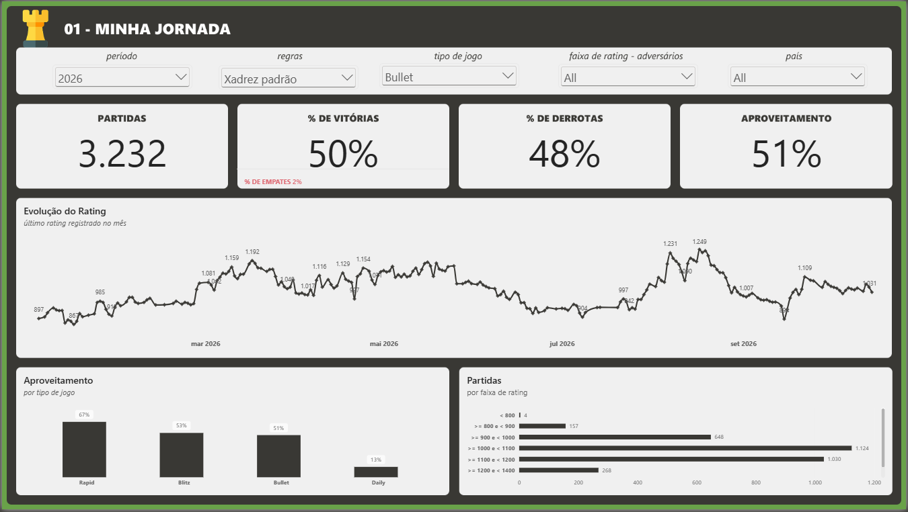

Evolução do Rating
Acompanhamento da evolução do rating registrado ao longo dos meses e anos.
POWER BI • API • XADREZ
Projeto pessoal que transforma meu histórico de partidas no Chess.com em uma análise interativa sobre desempenho, evolução de rating, aproveitamento e comportamento ao longo do tempo.

O PROJETO
O xadrez é um dos meus principais hobbies e o Chess.com é a plataforma que utilizo para jogar, treinar e acompanhar minha evolução.
Neste projeto, utilizei a API pública do Chess.com para transformar meu histórico de milhares de partidas em uma solução analítica desenvolvida no Power BI.
O objetivo foi construir uma visão estruturada sobre minha evolução como jogador, permitindo analisar resultados, rating, modalidades, adversários e diferentes períodos da minha trajetória na plataforma.
O DESAFIO
O histórico de partidas contém uma quantidade significativa de informações sobre jogadores, resultados, modalidades, rating e características de cada partida.
O desafio foi consumir esses dados através da API, estruturá-los, realizar as transformações necessárias e construir indicadores capazes de apresentar minha evolução de forma clara e interativa.
ANÁLISES
Acompanhamento da evolução do rating registrado ao longo dos meses e anos.
Análise das taxas de vitórias, derrotas, empates e aproveitamento geral das partidas.
Comparação de desempenho em modalidades como Rapid, Blitz, Bullet e Daily.
Distribuição das partidas de acordo com o nível de rating dos adversários enfrentados.
DASHBOARD INTERATIVO
Utilize os filtros e navegue pelas análises diretamente no relatório publicado no Power BI.
TECNOLOGIAS